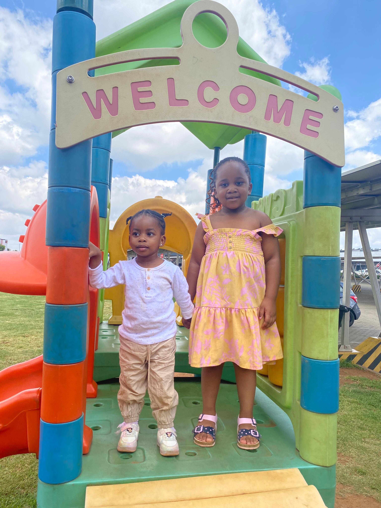
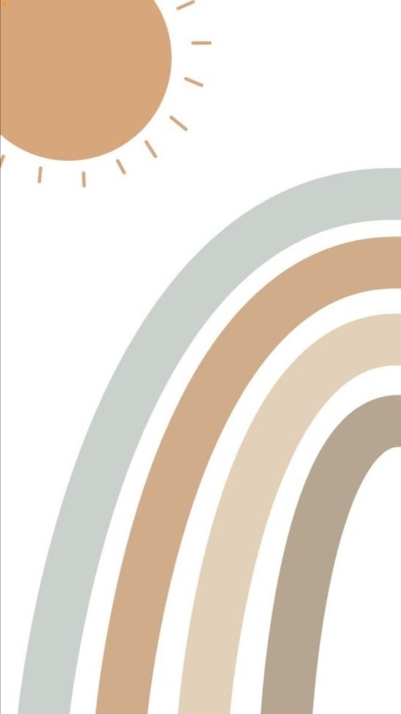

A nurturing early childhood academy where toddlers are given space, care, and guidance to express the light they were born with. We believe every child carries an inner light that cannot be hidden. At Akari Academy, that light is gently uncovered, nurtured, and allowed to shine freely through play, creativity, music, language, movement, and discovery.
Foundations of Brilliance

Mission statement
At Akari Academy, our mission is to a a safe, joyful, and enriching environment where toddlers can explore their natural abilities and are encouraged to explore their creativity, develop essential skills, and express the brilliance already placed within them. Through education, play, love and lots of fun we nurture young leaders whose light will shine boldly in the world. We aim to support each child in discovering their natural strengths while building confidence, curiosity, and emotional security.
Vision statement
To create a world where every child is recognised as a bearer of light, given the environment to grow, express, and bloom with confidence, joy, and purpose from an early age. Inspired by the truth that a light cannot be hidden, Akari Academy exists to nurture children who shine brightly in their individuality, creativity, and curiosity.
Core Philosophy
Children are not empty vessels to be filled. They are lights already shining. Our role is not to create brilliance, but to create the environment where brilliance can be seen, nurtured, and expressed. This academy is inspired by the belief that: “A light that is hidden or covered cannot be illuminated.” Each child carries a God-given brilliance. When given love, guidance, and freedom of expression, that brilliance becomes visible in how they learn, play, sing, speak, and create. We believe the glory of the Lord rests upon children, and their development should reflect joy, innocence, and radiance.

Meaning of Akari
Akari represents light, radiance, and beauty in growth. It reflects the idea of something beautiful blooming from the ground—like a flower opening toward the sun. A gentle unfolding of potential, innocence, and brilliance. At Akari Academy, every child is seen as a bloom in progress, growing in their own time and in their own way.